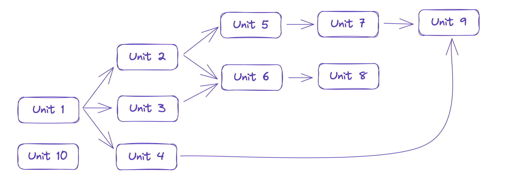

Основная идея⚓︎
Голосарий⚓︎
Юнит⚓︎
Сценарий⚓︎
Для понимания рассмотрим небольшой пример по схеме изображенной ниже. Так же небольшие примеры обработки есть в тестах.

Сценариями в данном случае являются:
- Unit1 —> Unit2 —> Unit5 —> Unit7 —> Unit9
- Unit1 —> Unit2 —> Unit6 —> Unit8;
- Unit1 —> Unit3 —> Unit6 —> Unit8;
- Unit1 —> Unit4 —> Unit9;
- Unit10.
Пользователь присылает боту свое первое сообщение, например, «Привет». Если сообщение удовлетворяет регулярному выражению или содержит необходимое количество ключевых слов Unit1, то возвращается Unit1, то же самое относится к Unit10.
Если оба юнита удовлетворяют запросу пользователя, то будет возвращен юнит с большим приоритетом (поле priority). Если приоритеты равны, то случайный Unit.
В нашем примере, на первое сообщение, пользователь получил Unit1, поэтому следующее сообщение пользователя будет ассоциироваться с множеством: Unit2, Unit3 и Unit4.